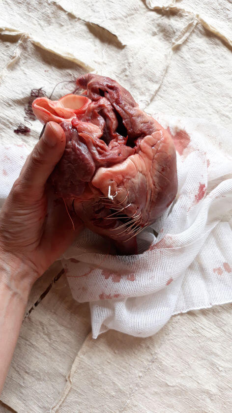

✕
300 grammi
progetto fotografico / stampa su dimensioni variabili
2019
Cuore. Organo muscolare cavo. 300 grammi.
Un peso minimo per un organo capace di ricevere sangue e di rilasciarlo.
Ricevere e rilasciare in un continuum che non smette mai e si ferma solo con la morte.
Con la morte il sangue staziona all'interno di questo muscolo.
Si secca.

Ricevere e rilasciare in un continuum che non smette mai e si ferma solo con la morte.
Con la morte il sangue staziona all'interno di questo muscolo.
Si secca.

Il cuore deve essenzialmente accogliere e lasciare fluire, si apre costantemente almeno 70 volte al minuto, 4000 volte all'ora per un totale di circa centomila battiti al giorno.
Il sangue può scorrere solo in una direzione e quindi il flusso vitale non può mai tornare indietro e lo fa percorrendo circa ventimila chilometri al giorno.
Il sangue può scorrere solo in una direzione e quindi il flusso vitale non può mai tornare indietro e lo fa percorrendo circa ventimila chilometri al giorno.


Mi interessava toccare un cuore, pesarlo tra le mani, entrare in contatto con il sangue, fluido misterioso e nascosto, portatore di molteplici significati mitici e rituali, oltre che storici e culturali.
Rose George nel suo libro Nine pints (2018) scrive che "il ferro contenuto nel nostro sangue viene dalla morte delle supernove, come tutto il ferro del nostro pianeta. Questo liquido rosso vivo, pompato dal cuore, contiene sali e acqua, come il mare dal quale probabilmente siamo venuti".
Rose George nel suo libro Nine pints (2018) scrive che "il ferro contenuto nel nostro sangue viene dalla morte delle supernove, come tutto il ferro del nostro pianeta. Questo liquido rosso vivo, pompato dal cuore, contiene sali e acqua, come il mare dal quale probabilmente siamo venuti".

Il lavoro fotografico è stato realizzato con un cuore di maiale adulto.
Tenerlo tra le mani, sentirne il peso, accudirlo, cucirlo e custodirlo è stato come prendermi cura del mio stesso cuore, riconoscendolo nella manifestazione esteriore di un altro essere, in un respiro ampio, ancestrale e rituale.
Tenerlo tra le mani, sentirne il peso, accudirlo, cucirlo e custodirlo è stato come prendermi cura del mio stesso cuore, riconoscendolo nella manifestazione esteriore di un altro essere, in un respiro ampio, ancestrale e rituale.